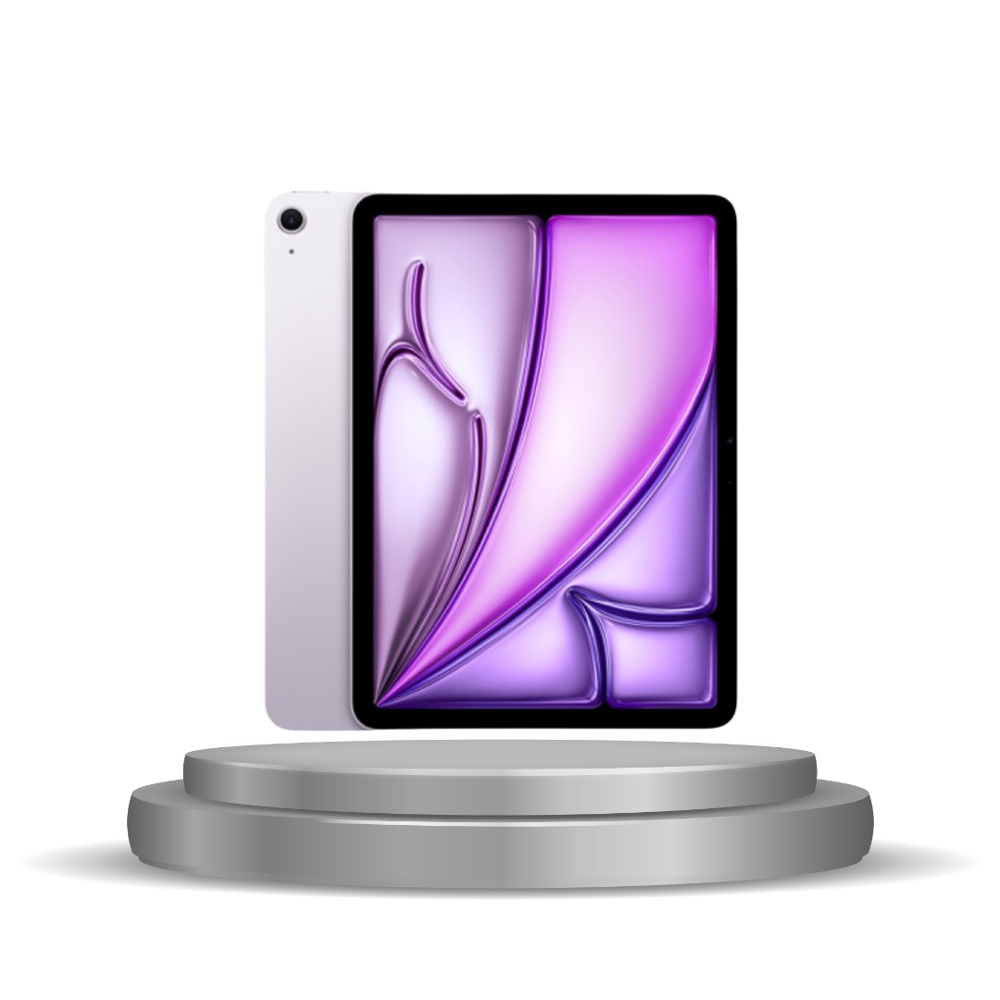
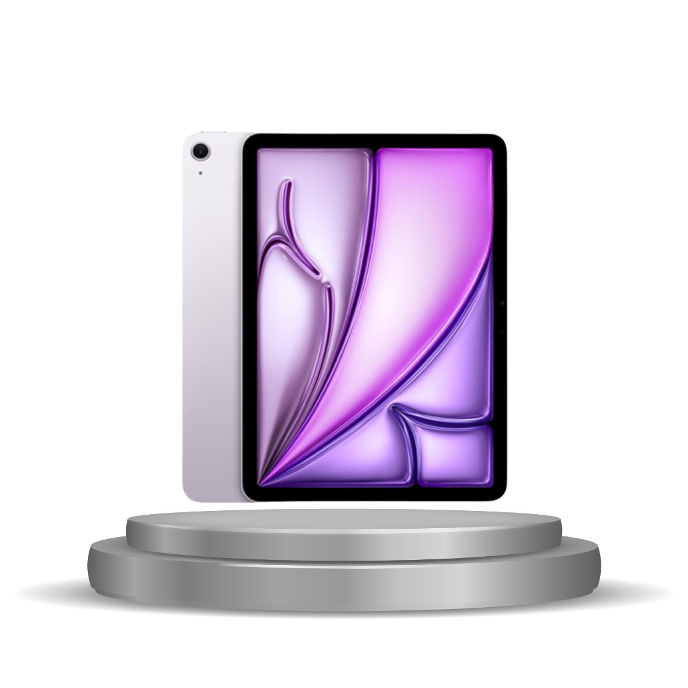

Your Trusted Gadgets Partner
The iPad can be used for a variety of tasks, including browsing the web, reading, sending emails, viewing photos, watching videos, listening to music, playing games, and reading e-books. It can also be used for productivity, such as working from anywhere, storing and organizing files, and connecting with others.